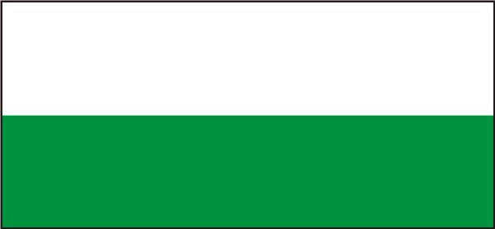

I
Rico valle de verdes llanuras
fértil tierra que Dios nos brindó
viviremos los años de gloria
siempre en paz con amor y humildad.
II
Madre tierra de grandes figuras
que en su seno las viste crecer
hoy son seres que escalan la gloria
y a su pueblo lo ven florecer.
III
Los labriegos se ganan la vida
desde el alba hasta el atardecer
regresando a su dulce morada
como premio a su duro quehacer.
IV
Nuestro templo reliquia sagrada
admirado por la humanidad
allí guarda un tesoro divino
santo Cristo patrón de bondad.
Autor: Adonai Paiva Rodríguez.


hecho por
damelis osorio erika aleman